爆款潜力 · 92 pts · Marzo
Primavera Bioclimática ARCH-S
Cultura madre
Inicio de primavera: renovación de hogar/espacios.
Ajuste con marca
ARCH-S convierte clima mediterráneo en confort real (ventilación, sombra, luz).
Nombre
Primavera Bioclimática ARCH-S
Instrucción promo
Comenta “PRIMAVERA” y recibe mini-auditoría de orientación + ventilación (gratis).
Super símbolo
Rosa de vientos sobre plano arquitectónico.
Score: 19 + 19 + 18 + 18 + 18 = 92

优质活动 · 87 pts · Marzo
Semana Santa de Materiales
Cultura madre
Semana Santa: pausa, reflexión y mejora del hogar.
Ajuste con marca
ARCH-S traduce materiales nobles en espacios de calma y valor percibido.
Nombre
Semana Santa de Materiales ARCH-S
Instrucción promo
Guarda el post + DM “MATERIAL” para recibir paleta premium editable.
Super símbolo
Moodboard físico (madera + piedra + metal) en cruz compositiva.
Score: 17 + 18 + 17 + 18 + 17 = 87

爆款潜力 · 91 pts · Abril
Día de la Tierra Regenerativo
Cultura madre
Día de la Tierra (22 abril): conversación global y alto share-rate.
Ajuste con marca
Arquitectura regenerativa como propuesta diferencial de ARCH-S.
Nombre
ARCH-S Día de la Tierra Regenerativo
Instrucción promo
Sube foto de un espacio mejorable + etiqueta ARCH-S para mini concepto público.
Super símbolo
Cubierta verde tipo “isla viva”.
Score: 20 + 18 + 18 + 17 + 18 = 91

优质活动 · 85 pts · Abril
Antes / Después Interior Express
Cultura madre
Ritual social de transformación visual (formato antes/después).
Ajuste con marca
Portafolio real de interiores con decisiones claras de presupuesto-impacto.
Nombre
Antes/Después Interior ARCH-S
Instrucción promo
Envía foto de tu estancia y presupuesto para propuesta rápida 1:1.
Super símbolo
Split-screen diagonal con sello “ARCH-S Upgrade”.
Score: 16 + 18 + 16 + 18 + 17 = 85
